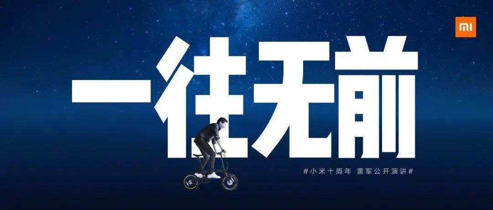
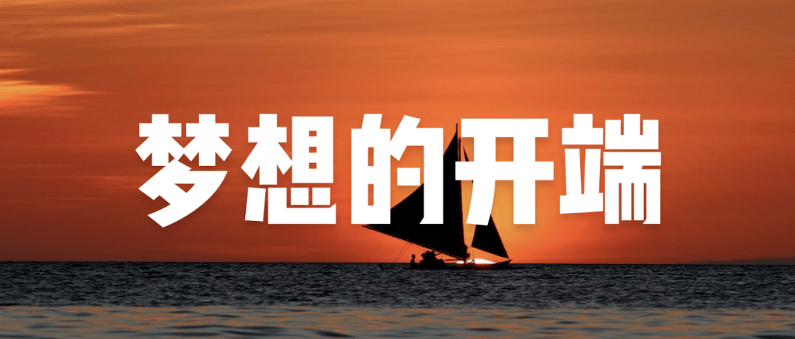
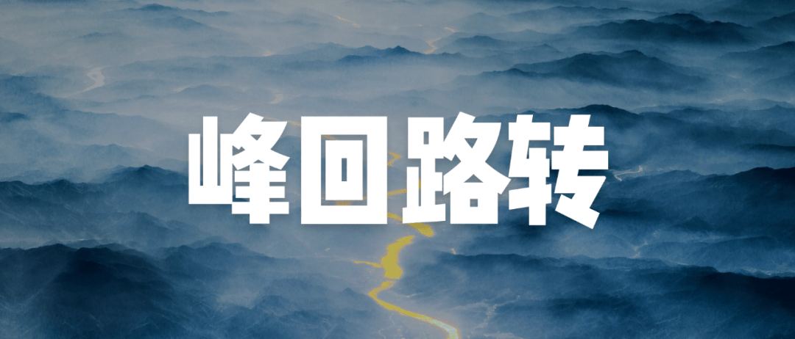
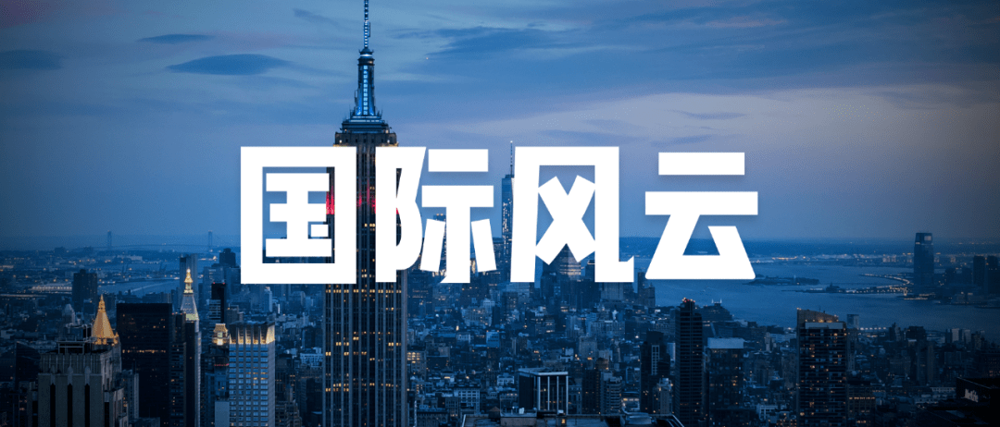
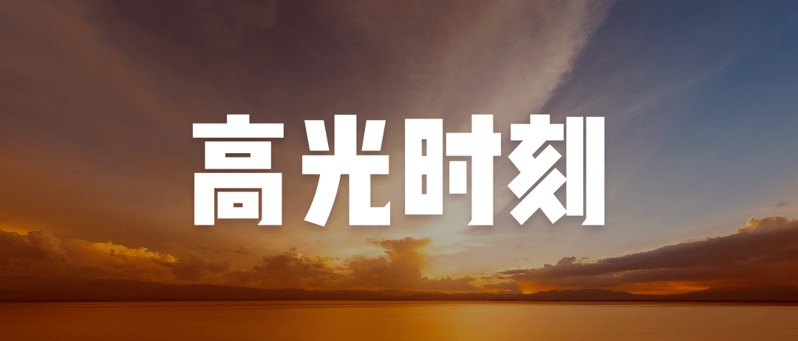

2020年8月11日19:30，小米十周年，雷军公开演讲如约而至。在近3小时的演讲中，雷军用20个故事回顾了小米过去的热血10年，也展望了新的10年
小米将继续为全球每个人的美好生活而努力。
本次小米十周年的演讲主题是—— 一往无前，致敬过去、现在、未来每一位不惧考验，选择“向前”的人。小米10年，感谢有你。
2020 年，非同寻常的一年，全球都在面临巨大的挑战。这场全球大变局，深刻影响着我们每一个人的生活。大家都在问，“面对这 样的局面，我该怎么办？”很多人都很焦虑，其实我也很焦虑。
当时国内的手机市场，一类是诺基亚、摩托罗拉和三星这样的国际巨头，一类是国产手机“中 华酷联”，就是中兴华为这样的大公司，还有铺天盖地的山寨手机。中国市场主要被国际巨头把持，产品贵得离谱，国产手机做得非常一般。
作为一位手机发烧友，同时，作为一个创业者，我 有点不服气。虽然我从来没有做过手机，但我们有了这样的梦想： “做全球最好的手机，只卖一半的价钱，让每个人都能买得起”。
一个从来没有做过手机的外行，一个从零开始的中关村小公司，要做全球最好的手机，谈何容易。 如何实现这个看起来不靠谱的目标？ 我有一个“脑洞大开”的想法：这些巨头都是硬件公司，假如我们用互联网模式来做手机呢？ 把软件、硬件和互联网融为一体，就可以另辟蹊径，“降维攻击”。 我也的确找到了一条“捷径”：当时硬件最好的是摩托罗拉，软件最好的是微软，互联网最厉害的是谷歌，假如我能把这三家公司的精英凑在一起，就有机会炼成“铁人三项”！
我找的第一个人是林斌，当时他是谷歌中国研究院的副院长。 当时赶巧，他正在考虑出来创业，做个在线音乐公司。我说，别做了，跟我一起干点大事。我在餐巾纸上画了这么一张图（“铁人三项”），他很快就答应了。这样，他成为小米第2号员工。 这么顺利的挖角只是一个偶然。接着我连续找了十个谷歌工程师，一个都没有搞定，真让人绝望，直到第11个。他就是洪锋，谷歌非常出色的工程师。 一上来，洪锋就问了我三个问题。 第一个问题，“你做过手机吗？” “没做过。” 第二个问题，“你认识中移动老总王建宙吗？” “不认识。” 第三个问题，“你认识郭台铭吗？” “郭台铭？我认识他，他不认识我。” 这三个问题下来，我估计没戏了，但出于礼貌，我还是坚持“尬聊”了很久。最后他做了一个总结：“这事听起来，不靠谱.......不过，可以试试。” 一瞬间，我长舒了一口气，终于搞定了！就像中了彩票。这是我搞定的第二个谷歌同学。 一个外行来做手机，大家凭什么相信你？我在面试牛人的时候，牛人也在面试我。 在小米创办的第一年，我花了80%的时间在招人。 我记得印象最深的一个人，我两个月和他聊了超过十次，甚至有几次一聊就是十个小时。 有很多企业家和创业者请教我，如何找人。我也总听到有人抱怨，找不到人。这是一个非常普遍的问题。
我的建议是：
找人不是"三顾茅庐"，找人要"三十次顾茅庐"！
只要有足够的决心，花足够的时间，可以组成一个很好的团队。
4月6日，我们十来个人，一起喝了碗"小米粥"开始闹革命。 不懂硬件，没关系，就先从软件开始，先干操作系统吧！
没有自己的手机做研发，没关系，就先在别人家的手机上做吧。 操作系统很复杂，没关系，先找一套开源系统，在开源系统的基础上干。 那时安卓刚起步，我们就成了国内最早一批做安卓的。但操作系统毕竟是操作系统，工程量相当庞大，不是十来个人的小团队可以搞定的。 没关系，我们先把最常用的功能做好就够了。就是打电话、发短信、通信录，还有桌面。这是智能手机当时最重要的四个功能。一个极其复杂的系统工程，就被我们高度简化了。 就这样，仅仅两个月时间，MIUI第一版就真的做好了。 我们建了一个论坛，招募志愿者来“刷机”。让我们感动的是，居然有100位用户愿意冒着巨大的风险刷 MIUI，也就是我们熟悉的“100位梦想的赞助商。” 为了感谢这100位勇敢者，我们用他们的名字做成了启动界面。
2010年8月16日，MIUI第一版正式发布了。 刚开始，只有100人，用户量少得惊人，但口碑超好。 我们没有做任何推广，第二周翻了一番，200人，第三周再翻一番，400人，第四周再翻一番，800人。 MIUI真正火起来，是在发布一个月后。9月20日，在国际著名的技术论坛XDA上，有位大神热情推荐了MIUI。 他是这样说的：“这是一个专业团队的作品，令人惊艳......有人听说过这个ROM吗？我这辈子从来没见过这么疯狂的ROM…它运行起来又快又流畅，界面全部重新设计了，这太不可思议了。” 看到这个评价，大家就知道，MIUI 第一版做到了什么水平。 一个中关村的小团队，用互联网方式，两个月做了一款手机操作系统，受到了非常高的赞誉。这充分说明了：互联网的方法论非常厉害！ 从此，MIUI 在全球发烧友人群开始火起来了。后来，各个国家都有网友自发建立当地的米粉社区，制作当地语言包，适配各种机型等，形成了一个声势浩大的全球群众运动，从此播下了小米国际化的种子。这就是米粉文化的来源。 我们就是用“专注、极致、口碑、快”互联网七字诀来做MIUI的。 不到一年时间，MIUI 用户量就超过了 30万。
如何搞定夏普 屏幕？
我们费了九牛二虎之力，搞定了当时能找到的最好的硬件团队，主要来自摩托罗拉，兴高采烈开始做手机了。 结果一出门就碰“大钉子”，突然发现搞不定供应链。 我们要做最好的手机，当然要用最好的供应链。比如屏幕，我们就想用夏普的，但人家根本不理我们。 我这才知道，顶级供应链，不是一家创业公司花钱就可以搞得定。 为了搞定这块心心念念的屏幕，我动员所有关系联系夏普，绕了一个巨大的圈子，通过金山的日本分公司，找到三井商社，再请三井商社高层出面，争取到了和夏普总部沟通的机会。时间定在3月26日。
这中间出了一件大事：2011年3月11日，日本地震，核电厂泄漏，全世界风声鹤唳。 咋办？去还是不去？夏普总部在大阪，虽然核辐射的影响不大，毕竟是核辐射，大家还是很恐慌。 能见到夏普高层的机会实在难得，我们还是下决心飞大阪，最后我们三个创始人一起去的。 我们上了飞机，才发现整个机舱都只有我们三个人。到了夏普，整个大楼空空荡荡的，只有我们一批访客。就这样，我们的诚意打动了夏普！ 那天我们太紧张，从头到尾基本没拍照。我只找到一张照片，刘德在夏普楼下的留影。
1999元是这么来的
大家都知道小米手机第一代定价1999元。 大家不知道的是，我们原本的计划是1499元。1999元就已经"沸腾"，要是1499元，不会"炸裂"吗？ 但是，到了8月，团队跟我说了一个吓一跳的消息：成本搞“冒”了，每台手机成本大约2000元，超了500元。 主要原因是，我们找的都是优质供应商，能跟我们合作就不错了，价钱根本没法谈。 如果继续定价1499元，我们估计要亏了2亿。怎么办呢？ 我去和股东们商量，他们劝我说，这就是你一个外行进来玩的门票。但这个门票实在太贵了，我有好几晚上没有睡着觉。
能不能把定价调高到 1999元？大家心里都没底，国产手机均价才700元，我们一上来就卖1999元，会不会翻车？不管了，我们只能豁出去试试！ 发布会定在2011年8月16日。发布会前一天，我们还在担心会不会搞砸了？会不会卖不出去？ 当天，我到现场，完全没有想到，里三层外三层挤满了人，我自己根本挤不进去了。米粉实在太热情了。 最后还是打电话叫了四个同事，帮我挤进去的。还有5分钟开场，我刚坐下，阿黎跑到我旁边，说，"人实在太多了，再挤怕出事，我们马上开始吧？"这是小米第一场发布会，也是小米历史上唯一一次提前5分钟开始的发布会。
现场长达半分钟的欢呼和尖叫，我悬着的心终于放下了，看来成了！ 最近我们找到一个同事在现场用手机录的视频，有点模糊，大家可以看看。 手机发布后，网友第一次就预定了30万台。 收到这个订单，我们既激动又烦恼，我们没有足够的资金，也没有足够的生产能力。 我们当时是一个小公司，没有账期，需要提前打款才能生产。要一次生产30万台，那是一笔天文数字。 这样，小米手机实在太火，我们又供应不上，很快就被贴上"饥饿营销"这个标签，真的非常冤。 第一代手机，总计销售700多万台，这绝对是一个奇迹。
第一代红米不是真的第一代红米
这时，政府主管部门给了我们一个新课题：小米手机这么火，能不能带动一下国内产业链？ 我们还只是刚刚创办的小公司，这么重的压力，我们扛得住吗？不想那么多，干了再说。2012年初，我们就制定了“红米计划”。 “红米计划”就是，优选国内产业链，做国民手机。 当时的国内产业链还不成熟，我们做的第一代产品，我非常不满意，我决定推倒重来。 这下子4000万的研发费用打水飘了。 大家见到的红米手机第一代，其实是我们研发的第二代，代号H2。 2013年7月31日，红米手机正式发布。
当时，我们借用了金山软件的一间会议室，没有任何装修，只是做了一个背景板。 这是小米历史上最简陋的一次发布会。红米手机能量巨大，一发布，就引发业内地震。没想到，第二天连金山软件的股价涨了。 第一代红米，热度远超过想象，我们就卖了 4460万台。这4000多万台智能手机，在2013年，有力带动了国内产业链的发展。 小米的手机业务当初巨大的成功，这背后是无数艰难的抉择： 要不要冒着核辐射的风险去日本搞定夏普？ 要不要把定价从1499改到1999？ 要不要干掉已经研发好的第一代红米，推倒重来？
这每一个选择的背后，都是巨大的风险。 没有任何一个成功是不冒风险的。直面风险，豁出去干！
小米火了，社会出现一个有意思的现象，很多人拼命学小米。 当时出现了很多互联网手机品牌。 以前我们不知道他们是如何学的，直到"小辣椒"创始人王晓雁加入了小米，在一场内部讨论会上，他讲了当初他是如何学的。一堆照葫芦画瓢、似是而非的模仿，让我们大家哄堂大笑。尽管只是学个形似，在当时，居然也很管用。
王晓雁是“自学”的，还有很多创业者、企业家亲自到小米来学习。 我们也非常愿意把我们的经验公开，希望推动更多行业的变革。2014年我们启动了生态链计划，孵化更多的创业公司。 仅仅六年时间，我们孵化了100多家生态链企业，做了上千种玲琅满目的优质产品。 我们是如何做的呢？我举一个例子： 当时，很多中国游客到日本疯狂抢购电饭煲，成了社会现象。我觉得不可思议，中国是世界工厂，怎么都做不好一个电饭煲。
于是，我们决定孵化一家创业公司主攻高端电饭煲。研发了一年半时间，我们电饭煲成功发布，引起了很大轰动。 一家日本电视台特意买了几台，跟日本高端电饭煲一起做街头盲测，结果有点不可思议：6:4，我们胜出了！而我们产品定价仅仅相当于日本同类产品的五分之一。后来，我们的电饭煲卖到了日本，非常受欢迎。
那是一段阳光灿烂的日子。 回想起来，我们也干了不少蠢事，比如和董明珠打赌。 2013年12月12日，我入选了央视年度经济人物，这是当时中国企业家能获得的最高荣誉。跟我一起入选的，还有格力的董明珠。 在颁奖典礼的后台，编导安排我和董大姐一起上场，并且撺掇我们把气氛弄得热闹一点。编导还特地说，前一年的颁奖晚会上，马云跟王健林打了一个赌，影响特别大。 我瞬间就明白了他的想法：格力代表中国传统制造业，有30年的历史，小米代表新经济，是一家成立才三年多的小公司，放到一起就特别有话题。 我跟董大姐说，要不咱俩也打个赌吧，赌一块钱，赌小米的营收五年时间能不能超过格力？我觉得这只是开个玩笑，活跃一下气氛。格力是一个巨无霸，营收1200多亿，我们小米营收才200个亿，只是人家的一个零头。董大姐想都没想就答应了。 结果，一上场董大姐就说，要赌就赌10个亿！那瞬间，我有点懵：剧本可不是这样的！赌1块钱，是活跃一下气氛。赌10亿，太夸张了吧。
果然，立刻成了社会话题，马上就有网友给我科普："你们这是巨资赌博，涉嫌违法"。我知道这是一个玩笑，所有人也都觉得这是一个玩笑。但董大姐却当真了，各种场合隔三差五就关心一下我们。 她这么关心我们，我可承受不了哪。大家觉得我应该咋办？ 之后，只要我和董大姐一起出现，媒体的朋友们就会从各种角度盯着拍。 当然，这个画风，你想都想不到。 全社会都这么认真，我们不得不认真了。 五年下来，小米从200多亿涨到了1749亿，涨了8倍，这已经是个奇迹，我非常满意。我们再看看格力，从1200亿涨到1980亿，涨了60%，作为一个传统制造企业，表现也非常杰出。 拿最后的结果一比，我们还是输了！ 比较戏剧的是，结束打赌的第二年，小米就赢了。 不过，我每次想起来打赌这件事情，都后悔得不得了。我们为啥招惹董大姐，带来那么多烦恼？直到最近，我才想清楚：那个时候我们，信心爆棚，的确膨胀了。很快，小米就遭遇了非常多成长的烦恼。 经过这次打赌，我对制造业的理解又加深了一步，同时也更了解格力了。格力的确是中国制造业的典范，值得我们认真学习！
2015年底，前期超高速成长，掩盖了非常多的问题，一下子全部爆发了出来。 手机行业，从来没有一家公司在销量下滑后，还能成功逆转的。这时的小米处于生死存亡的关头。 形势极其严峻，我不得不亲自接管了手机部。 那段时间，苦不堪言。我经常早上9点上班，到了凌晨一两点，还在开会。有一天下班的时候，我数了数，一天下来，我居然开了23个会，让人无法置信。
2016年10月25日，小米MIX发布，当MIX第一次点亮的瞬间，全面屏震惊了所有人。 世界三大设计博物馆也收藏了小米MIX。 芬兰国家设计博物馆馆长评价说："小米MIX指明了未来智能手机的发展方向"。 全面屏时代，由小米拉开帷幕。MIX发布成为了小米局势逆转的第一声号角。 MIX 源自 2014年初小米几个工程师闲聊，"未来的手机是什么样的？" 经过反复讨论，大家取得了一致的结论：手机正面全是屏幕。这个想法在当时可谓石破天惊。大家找我商量，我同意直接立项：这是了不起的想法，不要考虑量产性，不要考虑时间和投入，做出来为止。
MIX 的成功源于小米内部浓郁的工程师文化。工程师是小米最重要的资产，为了让工程师创新和探索的火炬越烧越亮，我们设置了小米技术奖。这是小米内部的最高奖项，奖励突破性贡献的技术小组，奖金是价值一百万美元的股票。 在这里我替小米的研发团队打一个招聘广告：只要你热爱技术，只要你技术过硬，欢迎你到小米来实现自己的梦想。
性价比是我们最有力的武器，也是我们最脆弱的软肋。 中国老百姓有个根深蒂固的观念就是"便宜没好货"，这让我们非常容易被误解，竞争对手也非常容易抹黑我们。小米如何在未来漫长的征程中立于不败呢？我们必须要拿出世界品质的好产品！ 质量的提升是个漫长、艰巨又枯燥的过程，细节我不讲了。
一分耕耘一份收获。2018年小米获得了“中国质量协会质量技术奖”一等奖，2019年我自己还获得了“中国年度质量人物”的殊荣。 努力补课的小米从2017年Q2开始了神奇的逆转，重新恢复高速成长。
小米很早就开始了国际化，我给大家说说我们国际化的故事。 2014第三季度，小米手机在中国登顶，仅仅靠中国市场的出货量，就在全球排到第三了。那个时候，投资者都非常看好小米，但提了一个非常尖锐的问题：小米模式能不能在全球复制？2014年6月，我们进入了印度市场，一路势如破竹，很快就成为了最耀眼的明星。 时间不长，我们很快遇到了麻烦。2014年7月，我们发布了小米4，在中国卖得非常好，一直供不应求。大家还记得"奥氏体304"、"一块钢板的艺术之旅"吗？
刚组建的印度团队非常乐观，说服我特批了50万台。2015年1月，这款旗舰手机在印度发布了。但谁也没有想到，居然卖不动。 事后反复复盘：我们刚进入，品牌和渠道都还没有准备好，就直接定了50万台旗舰机，这太吓人了。 高达10亿库存，这对刚起步的印度业务来说，是个灭顶之灾！ 我一听到这个消息，有点愣住了！运回国内？但那是3G版本的小米4，国内市场已经完全是4G手机的天下，咋办？ 我们火速组建了一支“救火队”，到全球去找3G市场去消化。刚开始，这个团队只有3个人，从东南亚到南美，从欧洲到中东，全球跑了五六十个国家。
当时小米在海外知名度还没现在那么高，吃了无数的闭门羹后，我们的同事终于打开了一条路。 有三类合作伙伴选择了我们：卖石油、卖天然气的贸易商想转行进入手机行业；卖笔记本电脑，现在想卖手机的；还有一批二线代理商，想在我们身上赌一把。就是这群伙伴和我们一起，杀入了全球手机市场。 总之，死磕了一年多，这要命的10亿库存，虽然损失惨重，但基本消化了。 塞翁失马，焉知祸福。这次救火行动带来一个意想不到的回报：开拓出来的渠道成了国际业务的先遣队，大大提速了我们国际化的进度。
国际化的路上，有坎坷，也有欢乐。比如，R U OK。 2015年我们在印度举办的一个发布会，来了很多米粉，热闹的不得了。 我们同事临时安排我，出场打个招呼，一激动，脱口而出说了一句，“R U OK？” 现场气氛一下就炸裂了。 没想到，这个视频传回国内，立马上了热搜。 B站上有位UP主还做了个鬼畜视频，让我成了B站的知名歌手。
我们的市场部同事一开始还有点紧张，但我觉得没啥，大家开心就好。 这件事情还是给我带来了不少烦恼，作为武大的杰出校友，从此以后，我要到处解释：武汉大学还是正规大学，是我自己英语没学好，不是武大没教好。 现在，小米进入了全球90多个国家和地区，手机业务在50个国家和地区中位居前5。最近两年主攻欧洲市场，今年刚刚传来喜讯：我们在欧洲已经排到第三了，甚至，西班牙已经登顶，法国排到第二！
经历过这一系起伏，就会明白： 成功往往不是规划出来的，危机是你想不到的机会。
创业十年之际，有三个难忘的高光时刻。 第一当然是上市。 在整个上市过程中，最难忘的就是 5% 那件事。 小米IPO前夕，2018年4月25日，我在武汉大学办了一场发布会，宣布了一项董事会决议：小米硬件综合净利率永远不超过5%，如有超出的部分，将超出部分全部返还给用户。 一个公司马上就要上市了，不好好路演"画大饼"，反而卡自己的利润空间，是不是有毛病呢？ 小米上市后，变成了一家公众公司，资本一定会逼着小米创造"超额"的利润。我自信能扛住这样的压力，但我特别担心：如果有一天我不做CEO了，小米管理层还能不能继续坚持做“感动人心、价格厚道”的好产品呢？
想来想去，只有一个办法：那就是以法律文件的形式，把这一使命固化下来，永久限制硬件净利率。
我把这个想法和团队一说，一起奋斗的兄弟们都特别支持。 但跟股东一提就炸锅了，有各种担心，尤其担心对股价有影响。有人说，“你们是不是疯了，还想不想上市”。有人说，“当初你们可不是这么说的，早知道如此，我就不投了”。还有人说，“来不及了，别折腾了”。 我们开了好多次紧急电话会，中间有几次都要聊不下去。我对他们说，“优秀的公司赚取利润，伟大的公司赢得人心！如果你们同意，你们拥有的将是一家注定伟大的公司！” 就这样，一锤定音，股东们同意了。
当我们公布了这项决议，我的朋友圈被“5%”刷屏了。 我们收到了非常多的赞誉，也有不少嘲讽和质疑，但这些已经不重要了。
第二件难忘的事情就是搬家，我们搬到自己的科技园。
去年7月，小米科技园正式开园，我们第一次拥有了自己的家，心情无比激动。 在我们眼里，这个园区漂亮极了，美轮美奂，我们亲切地称之为"清河三里屯"。 我专门发了一条微博。 内容是这样的：“北漂，奋斗九年多，终于买房了！8栋楼，34万平方米，52亿造价”。 这条微博马上就火了，阅读量高达3300万。看来，每个北漂心里，都有一个买房的梦！
让我万万没想不到的是，房产中介居然比我还激动，也在到处转发，说这是“最励志的北漂
接着我们入选了世界500强。
大家可以看一下，这是过去10年小米营收的变化，一条多么优美和昂扬向上的曲线。 就是因为这样的成绩单，我们入选世界500强，排名468名。 之前我也没觉得有啥，但真的入选了，还是有点小激动。 我在写全员信时，有同事建议咱们要不谦虚点，装着不在意。 我说，“这次咱们就别装了，我大学一毕业就开始创业，特别羡慕林斌他们有机会在500强上班，现在好不容易把自己公司搞成了世界500强，终于可以在500强上班了。我们一定得好好‘嘚瑟’一下。” 就在昨天，小米再次入选了世界500强。
这一切要感谢这个伟大的时代，还有所有持续奋斗的小米同学们。
过去，小米一直被拿来与老牌500强苹果、华为和三星来比较，的确有差距。 但小米还只是一个10岁的少年，如果用发展的眼光来看，你会发现小米还是有非常多出色的地方，比如：BCG 2020年全球创新50强，5家中国公司入选。华为、阿里巴巴、腾讯、京东和小米入选。 德温特 2020年全球创新百强榜。仅仅3家中国公司入选，分别是华为、小米和腾讯。 BrandZ 2020年全球品牌百强榜。这次有17家中国品牌入选，小米也在其中，排名81位。
这三个全球权威的榜单，充分说明了小米在创新和品牌方面取得的了不起的成绩。
当然，今天的小米，可能离各位的期望，还有一些距离，但未来成长的速度注定会超过大家的想象。
小米的十年，就是移动互联网的十年。和这个伟大的时代同行，是我们最大的荣幸。 当我们回首过去十年时，让我们真正自豪的是什么？小米的十年，就是移动互联网的十年。和这个伟大的时代同行，是我们最大的荣幸。 当我们回首过去十年时，让我们真正自豪的是什么？
首先，我们和所有同行一起，普及了智能手机，推动了移动互联网的发展。 滴滴的创始人程维曾经说：中国移动互联网的创业者可能都要感谢小米，因为小米有力推动了移动互联网的普及。美团、滴滴、字节跳动、快手等等，今天你耳熟能详的新一代互联网头部企业，都得益于移动互联网的发展。
第二，我们和志同道合的创业者一起，改变了不少行业，也成就了不少创业者。 2015年初，小米生态链投资了昌敬。一个刚刚从大公司出来创业的小伙子。谁也没有想，只用了5年，石头科技就成为了扫地机器人行业的领导者，今年2月成功在科创板上市，市值高达400。小米生态模式带动了100多个行业的变革，成就了一大批像昌敬这样的创业者。
除此之外，小米甚至还改变了一些人的人生。 Ellyana （艾莉娅娜）住在印度尼西亚的巴淡岛，她是三个孩子的妈妈。几年多前丈夫去世后，家里没有经济来源，生活陷入了困境。 三年前，小米在印尼设立了生产线。她在小米印尼工厂找到工作，生活发生了巨大变化。有了这份工作，她可以养活一家人，而且还学了很多知识，交了很多朋友，在村子里的地位也大大提升。 印尼小米产线上90%的员工都是女性，我们的事业帮助她们从此改变了自己的人生。
以上就是我为大家解答的第一个问题，“小米从哪里来”。 当然，这十年有太多精彩故事，一场演讲肯定说不完。 知名传记作家范海涛，撰写了首部官方授权的小米传记。她从前年年底开始，对小米团队做了大量的采访，先后采访了100多人，历时一年半时间。
这本书的书名，就叫《一往无前》。
十岁的小米，正在一步一步长大。 今年的研发预算就高达100亿元。 正是因为永不止步的创新精神，高达100亿的研发投入，小米永远有更多更酷的产品诞生。 那么，小米人眼中的小米十年又是什么样的呢？
雷总表达了三个愿望： “第一个愿望，是小米变成全球最知名的品牌之一。无论我们到哪个国家， 大家都知道Xiaomi的发音怎么读。 第二个愿望是，不会再有人说雷总是劳模了，因为这个舞台属于小米的年轻人。 第三点是，又有一大群了不起的创业公司诞生了，甚至长大了。他们在他们成功的时候说他们受了小米创业故事的激励。我相信小米会走到我们梦想未曾抵达的高度。”
小米永不更改的三大铁律 今天的演讲，到这里已接近尾声。 今天，我们不仅仅是在发布产品，更是在发表小米面向下一个十年的宣言。 “小米从哪里来，又将往哪里去”，答案其实就在我刚刚发布的几款作品中。
1 小米10至尊版 大家可以数数有多少项黑科技，120倍变焦，DxO全球第一，120W秒充，50W无线秒充，等等。正是因为一系列黑科技加持，小米才有勇气和实力，角逐高端手机市场。
2 K30至尊版 用一款"无槽点、无遗憾"的旗舰手机，重回1999元，致敬"为发烧而生"，致敬我们和米粉共同的十年。
3 小米透明电视 是全球第一款量产的透明电视，把不可能变成可能，这个产品够酷吗？ 坚持做最酷的产品，才是小米永恒的追求。做用户心中最酷的公司，这就是小米的愿景。 我们是一群工程师，做最酷的产品，才是我们对这个世界的爱，才是我们的本分。
这三个"超大杯"，代表的是小米永不更改的三大铁律：“技术为本、性价比为纲、做最酷的产品”，我们将始终坚持这三大铁律。 面向未来的发展策略 今天我们讲了非常多过去十年的成绩，我们的确非常自豪。 但我们也非常清楚，今天我们面临非常复杂的国际环境，同时面对极其激烈的竞争环境。下一步，我们该怎么办？ 要想固守今天的成绩，躺着过去的业绩上过日子，毫不疑问，守不住。 要想继续不管不顾、猛冲猛打、粗放成长，毫不疑问，这条路也走不通。这就是我们今天面临的复杂局面。
今天，我们的策略有三条： 1 重新创业 今天的局面，我们还是需要拿出重新创业的热情，豁出去干！ 大胆启用创业型人才，大胆使用创业型的激励，大胆把握新的战略机遇...... 具体细节我就不展开说了。 行胜于言，未来这段时间，我们做给大家看。 2 互联网+制造 我们信仰互联网，我们相信互联网的方法论，我们会坚持用互联网赋能制造业。 在继续和代工厂真诚合作的基础上，我们会深度参与制造业。我们已经自研大量高端装备，并已设计完成了全自动化的高端手机生产线。 小米产业基金已投资了超过70家半导体和智能制造的公司。 这就是小米未来要做的"制造的制造"。 3 行稳致远 所有事情，我们都会用十年的长度来看。做长期有价值的事情，和时间做朋友。同时，战略上稳打稳扎，不要冒进。
我相信：
下一个十年，创新之火将会照亮每个疯狂的想法，小米将成为工程师向往的圣地。
下一个十年，智能生活将彻底影响我们每个人，小米将成为未来生活方式的引领者。
下一个十年，智能制造将进一步助力中国品牌的崛起，小米将成为中国制造业不可忽视的新兴力量。
下一个十年，小米将成为一条蜿蜒奔涌的长河，流过全球每个人的美好生活，奔向所有人向往的星辰大海。
在未来的征程里，相信自己，一往无前！
谢谢大家！